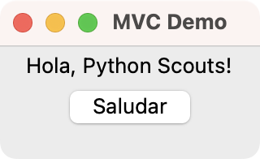

El patrón Modelo-Vista-Controlador (MVC) es usado en la industria del software para definir la arquitectura general de una aplicación.
Este patrón permite separar la lógica específica de cada uno de los componentes de la aplicación. El modelo maneja la lógica de negocio, la vista es el componente visual y el controlador se ocupa de conectar y controlar el funcionamiento de los dos anteriores.
En este tutorial aprenderá:
- Qué es MVC y cómo funciona
- Qué rol desempeña cada uno de los componentes del MVC
- Cuáles son los beneficios de emplear el MVC en tus aplicaciones
¿Qué es el patrón Modelo-Vista-Controlador?
El Modelo-Vista-Controlador (MVC) más que un patrón de diseño, puede ser considerado un patrón de arquitectura de software. La diferencia entre el primero y el segundo es que el segundo tiene un alcance mucho mayor, pues define la arquitectura fundamental de la aplicación o sistema que estés desarrollando.
Este patrón tiene tres componentes:
-
Modelo es el componente central y representa el conocimiento. El modelo contiene y gestiona la lógica del negocio, los datos, el estado y demás reglas fundamentales de la aplicación. Los datos pueden ser almacenados en el propio modelo o en una base de datos. En este último caso solo el modelo puede tener acceso a esta base de datos.
-
Vista es el componente visual pues debe proveer una representación visual del modelo que el usuario generalmente puede ver en pantalla. Por ejemplo, las Interfaces Gráficas de Usuario (GUI por sus siglas en Inglés), o las salidas de texto en una consola o terminal, los gráficos de barras o de pastel, los documentos, las hojas de cálculo, y similares. La vista se limita a mostrar los datos contenidos en el modelo, sin tener la capacidad de manipularlos o modificarlos.
-
Controlador es el enlace o medio de comunicación entre el modelo y la vista. El encargado de controlar todo el funcionamiento de ambos. Todo el flujo de comunicación entre el modelo y la vista es gestionado a través del controlador, por tanto, no existirá comunicación directa entre estos. Normalmente, el controlador acepta las acciones y entradas del usuario y delega la representación de los datos en la vista y la manipulación en el modelo.
El MVC permite la aplicación práctica del principio de Separación de intereses (Separation of Concern) al diseño de aplicaciones, donde cada uno de los componentes del patrón tiene una responsabilidad bien definida y única.
¿Cómo funciona el patrón MVC?
La lógica de funcionamiento del MVC puede ser más fácil de comprender con un ejemplo práctico. Supón que tienes una aplicación con una interfaz gráfica de usuario (GUI) donde puedes realizar acciones o eventos, incluidos hacer click, presionar teclas, tocar el display táctil, entre otros.
Cuando ejecutas la aplicación, inmediatamente ves su ventana principal en tu escritorio. Si la aplicación está implementada usando el MVC, entonces debe funcionar del siguiente modo:
-
Ejecutas una acción (evento) sobre la vista o ventana de la aplicación.
-
La vista recibe la acción e inmediatamente informa o notifica al controlador sobre la acción realizada.
-
El controlador a su vez, delega la solicitud al modelo y actualizar la vista en consecuencia.
-
El modelo realiza toda la validación de los datos y las entradas y luego procesa los requerimientos y realiza los cambios de estado solicitados, para finalmente informar al controlador que el cambio de estado correspondiente ha sido realizado.
-
El controlador recibe la información de cambio de estado generada por el modelo y se la envía a la vista, quien se encargará de mostrarla en pantalla.
Haciendo una analogía puedes comparar el MVC con un restaurante. La carta sería la vista que contiene la información sobre el menú, el mesero sería el controlador que recibe la orden del cliente y se la transmite al chef quien representa al modelo y se encarga de confeccionar el plato solicitado por el cliente.
En muchas implementaciones de MVC, especialmente en aplicaciones web, las acciones del usuario no son directamente manejadas por la vista, sino que pasan primero por el controlador. La vista debería ser lo más pasiva posible, simplemente renderizando lo que el controlador le proporciona. El controlador debe ser quien maneje las acciones del usuario y decida qué hacer con ellas, incluyendo actualizar el modelo o cambiar lo que se muestra en la vista.
Una vez que el plato está listo, el chef se lo hace saber al mesero, quien finalmente sirve la comida al cliente en forma de un plato terminado que sería la nueva representación de la vista.
El chef y el cliente no tienen contacto directo, pues todo es gestionado por el mesero. Este es un principio básico de este patrón de diseño.
¿Qué responsabilidades tiene cada componente del patrón MVC?
Para implementar el patrón MVC desde cero, debes asegurarte de crear modelos autónomos que recojan todo el conocimiento y la lógica del negocio. Los controladores deberán ser ligeros y limitarse a canalizar el flujo de información de la vista al modelo y viceversa. Las vistas deben limitarse a mostrar la información de estado del modelo.
Para que el modelo pueda ser considerado autónomo debe:
- Contener todas las reglas de validación de entradas y la lógica del negocio
- Manipular el estado de la aplicación
- Tener acceso directo a los datos de la aplicación (bases de datos, nube, archivos de configuración, etc.)
- No depender de la interfaz de usuario
Un controlador es considerado ligero cuando:
- Actualiza el modelo cuando el usuario interactúa con la vista
- Actualiza la vista cuando hay cambios en el modelo
- No muestra datos directamente
- No tiene acceso directo a los datos de la aplicación
- No contiene reglas de validación ni lógica de negocio
Una vista debe:
- Mostrar los datos contenidos en el modelo
- Permitir que el usuario interactúe con ella
- Realizar un mínimo procesamiento de datos con el fin de mostrarlos al usuario
- No almacenar datos
- No tener acceso directo a los datos de la aplicación
- No contener reglas de validación ni lógica de negocio
¿Cómo implementar el MVC? Un demo con Tkinter y Python?
En las secciones siguientes, desarrollarás una aplicación con una GUI escrita en Tkinter, que es el paquete de desarrollo de aplicaciones de escritorio por defecto de Python y que la puedes encontrar en la biblioteca estándar del lenguaje.
Para este ejemplo, desarrollarás una aplicación sencilla que te permitirá mostrar saludos aleatorios en una ventana.
El modelo
Lo primero que debes definir es el modelo de tu aplicación. Crea un archivo Python llamado model.py y escribe el siguiente código en él:
from random import choice
class Model:
def __init__(self):
self.greetings = (
"Hola, Python!",
"Hola, Mundo!",
"Hola, Python Scouts!",
)
def get_greeting(self):
return choice(self.greetings)
La class Model maneja una serie de saludos almacenados en el atributo .greetings. El método .get_greeting() permite seleccionar un saludo aleatorio empleando la función choice() del módulo random.
Este modelo funciona independientemente de la vista que emplees. Para esto, cuenta con sus propios datos y los métodos necesarios para manipular adecuadamente estos datos.
La vista
La vista es la representación gráfica de tu aplicación. Es lo que el usuario ve y con lo que interactúa directamente. La vista recibe las acciones del usuario, las notifica al controlador y luego refleja los cambios del modelo que resultan de las acciones del usuario.
Crea un archivo llamado view.py y pon en él el siguiente código:
import tkinter as tk
class Window(tk.Tk):
def __init__(self):
super().__init__()
self.title("MVC Demo")
self.geometry("160x70")
self.greetings_label = tk.Label(text="Hola, Python Scouts!")
self.greetings_label.pack()
self.greetings_button = tk.Button(text="Saludar")
self.greetings_button.pack()
def show_greeting(self, greeting):
self.greetings_label["text"] = greeting
En la vista Window solo incluyes código Tkinter. La vista debe ser autosuficiente, es decir, debe tener todos los métodos necesarios para actualizarse. En este caso, solo necesitas el método .show_greeting().
El controlador
El controlador permite conectar la vista y el modelo. Es el único que debe tener conocimiento del resto de los componentes, vista y modelo. El controlador debe encargarse de guiar y gestionar las operaciones de acceso, modificación y actualización del modelo y de la vista.
Para el controlador, crea un archivo con el nombre app.py y escribe el siguiente código en él:
from model import Model
from view import Window
class Controller:
def __init__(self, model, view):
self._model = model
self._view = view
self._view.greetings_button["command"] = self._greet
def run(self):
self._view.mainloop()
def _greet(self):
self._view.show_greeting(greeting=self._model.get_greeting())
# Client code
controller = Controller(model=Model(), view=Window())
controller.run()
En este archivo, defines una clase llamada Controller. En el método .__init__(), tomas como argumentos el modelo y la vista a emplear. Luego creas atributos para almacenar estos elementos y finalmente, conectas el botón Saludar de la vista con el método ._greet() del controlador.
El método ._greet() es lo que se conoce como un callback. Este método se ejecuta cuando haces click en el botón Saludar. En este método, primeramente accedes al modelo con el fin de obtener el saludo usando el método .get_greeting(). Luego, le indicas a la vista que muestre el saludo llamando el método .show_greeting().
Fíjate que el controlador usa los métodos del modelo o de la vista en función de la tarea a realizar. El controlador no debe implemente lógica de negocio o manipule directamente los datos del modelo. Su papel es coordinar las interacciones entre la vista y el modelo.
Además, debes notar que el controlador solo tiene un método público, .run(). El resto de sus métodos y atributos no son públicos pues sus nombres comienzan con un guión bajo.
Una vez definido el controlador, viene el código cliente donde creas una instancia del controlador y llamas el método .run() para ejecutar la aplicación. Para probar cómo funciona tu aplicación, ejecuta el siguiente comando en una ventana del terminal. Asegúrate de estar en el directorio que contiene el archivo app.py de tu aplicación:
$ python app.py
Al presionar Enter, verás en pantalla una ventana similar a la siguiente:

Si presionas continuamente el botón Saludar, verás que aparecen los diferentes saludos de forma aleatoria uno tras otro. En este ejemplo puedes ver como cada clase realiza su trabajo y únicamente su trabajo.
¿Qué beneficios ofrece el patrón MVC?
Si empleas coherentemente el patrón de diseño MVC en el desarrollo de tus proyectos de software, obtendrás las ventajas siguiente:
-
La separación entre la vista y el modelo permite que los diseñadores gráficos puedan dedicarse al diseño de la interfaz a la vez que los programadores se encargan de programar y probar el modelo, sin ninguna interferencia entre ellos. Luego, solo será necesario programar el controlador adecuado y la aplicación quedaría lista.
-
La poca o nula interdependencia entre el modelo y la vista, permite que cada parte pueda ser modificada de manera independiente sin que se afecte la otra, lo que mejora considerablemente la mantenibilidad de tus aplicaciones.
-
El proceso de añadir nuevas vistas solo demanda de implementar el controlador adecuado.
-
El modelo no tiene conocimiento de las vistas, por tanto, es posible tener vistas diferentes para un único modelo. Por ejemplo, puedes crear una vista web, otra para el escritorio, y otra para dispositivos móviles.
-
El trabajo de mantener cada parte es mucho más fácil, debido a que las responsabilidades están claramente definidas.
Resumiendo
Ahora conoces conceptos fundamentales sobre el patrón Modelo-Vista-Controlador. Tienes una idea clara de qué cosa es el patrón de diseño Modelo-Vista-Controlador (MVC), cuáles son sus componentes fundamentales y qué función tiene cada uno de ellos.
Ahora sabes:
- Qué es MVC y cómo funciona
- Qué rol desempeña cada uno de los componentes del MVC
- Cuáles son los beneficios de emplear el MVC en tus aplicaciones
Aplicando estos conocimientos a tus proyectos Python, podrás darles una mejor organización de manera que sean más fáciles de modificar y mantener.